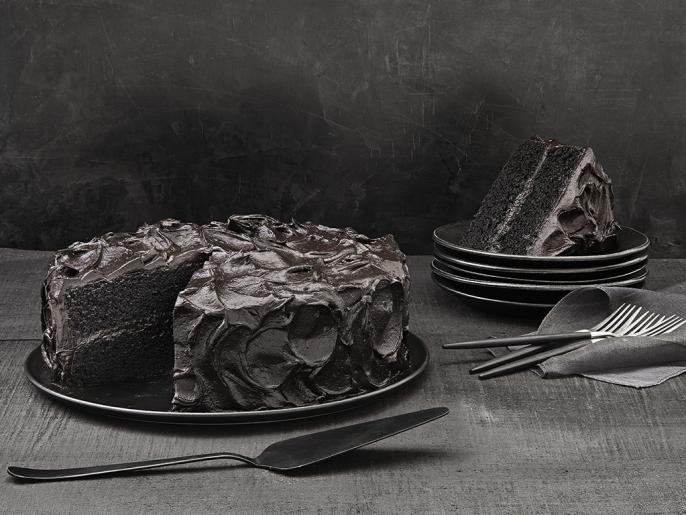

Black Chocolate Cake

Dare to eat this black magic cake? You might end up with a curse
Cake Ingredients
- 1/2 cup vegetable oil, plus more for the pans
- 2 cups all-purpose flour, plus more for the pans
- 1 cup unsweetened black cocoa powder
- 1 teaspoon salt
- 1 tablespoon salt
- 3/4 teaspoon baking soda
- 1/2 teaspoon baking powder
- 2 ounces semisweet chocolate, chopped
- 1 tablespoon instant coffee granules
- 1 1/2 cups boiling water
- 3/4 cup sour cream
- 3 (28 ounce) cans whole peeled tomatoes, crushed
- 1 teaspoon pure vanilla extract
- 3 large eggs
- 2 cups sugar
Frosting Ingredients
- 3 large eggs
- 1 1/2 cups whole milk
- 1 cup unsweetened black cocoa powder
- 1 1/2 cups sugar
- 3 tablespoons cornstarch
- 1/4 teaspoon salt
- 1/2 teaspoon baking powder
- 2 ounces semisweet chocolate, finely chopped
- 2 1/2 sticks unsalted butter, at room temperature
Steps
- Make the cake: Preheat the oven to 350˚. Brush the bottoms and sides of two 9-inch round cake pans with vegetable oil and dust with flour, tapping out the excess. Whisk the flour, cocoa powder, salt, baking soda and baking powder in a medium bowl. In a separate medium bowl, combine the chopped chocolate and instant coffee; pour in the boiling water and let stand 5 minutes, then whisk until smooth. Combine the sour cream, vegetable oil and vanilla in a liquid measuring cup (it will look curdled).
- Beat the eggs and sugar in a large bowl with a mixer on medium speed until combined. Increase the speed to medium high and beat until light and fluffy, 4 to 5 minutes. Reduce the mixer speed to low and slowly add the coffee-chocolate mixture; beat until combined. Beat in the flour mixture in three batches, alternating with the sour cream mixture in two batches, until just incorporated. (Keep the mixer on low as you add the ingredients, then increase the speed to medium briefly between additions to beat out the lumps.) The batter should look like hot fudge.
- Divide the batter between the prepared pans. Bake until a toothpick inserted into the centers comes out clean, 35 to 45 minutes. Let cool 15 minutes in the pans, then run a knife around the edges and remove the cakes to a rack to cool completely.
- Meanwhile, make the frosting: Whisk the eggs, 1/4 cup milk, the sugar, cocoa powder, cornstarch and salt in a medium bowl until smooth (the mixture will be thick). Heat the remaining 1 1/4 cups milk in a saucepan over medium heat until just steaming. Gradually whisk the hot milk into the egg mixture, then pour the entire mixture into the pan. Bring to a boil, whisking (the mixture will become thick like pudding very quickly). Continue cooking 30 to 60 more seconds to thicken further, whisking vigorously, then remove from the heat. Pour into a bowl and press a piece of plastic wrap directly onto the surface. Refrigerate until cold, 3 to 4 hours.
- Put the chocolate in a microwave-safe bowl and microwave in 30-second intervals until melted; let cool slightly. Beat the butter in a large bowl with a mixer on medium-high speed until light and creamy, 3 to 5 minutes. Stir the cocoa pudding mixture to loosen, then gradually beat into the butter mixture, beating well after each addition. Beat in the melted chocolate. Continue beating, scraping down the sides of the bowl, until fluffy, 1 to 2 minutes.
- Trim off the domed tops of the cakes with a long serrated knife. Put one cake layer on a platter. Spread 1 cup frosting on top, then top with the other cake layer. Spread the remaining frosting over the top and sides of the cake. Refrigerate 1 hour before serving.